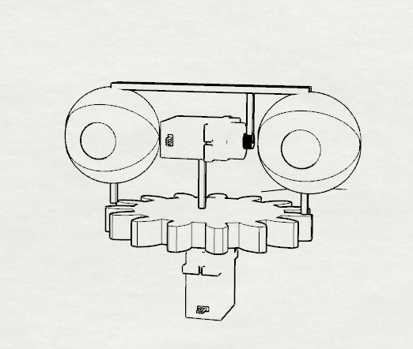
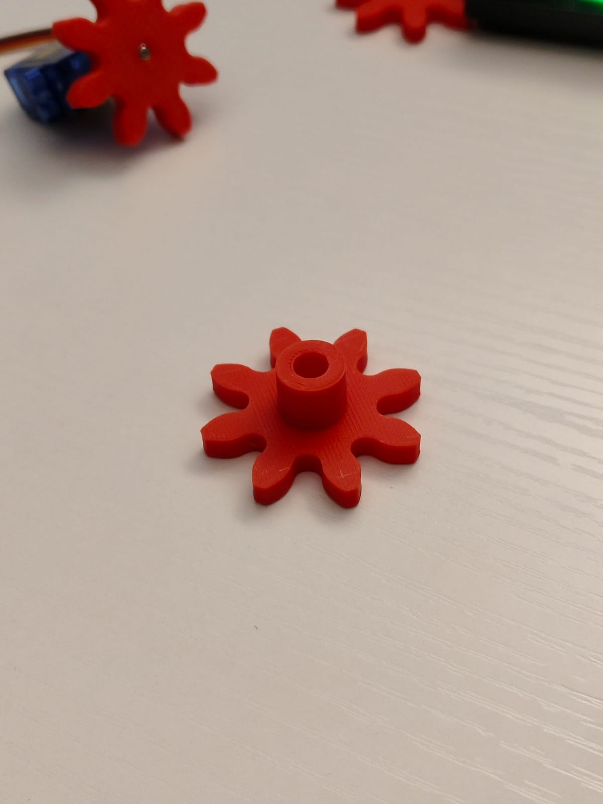
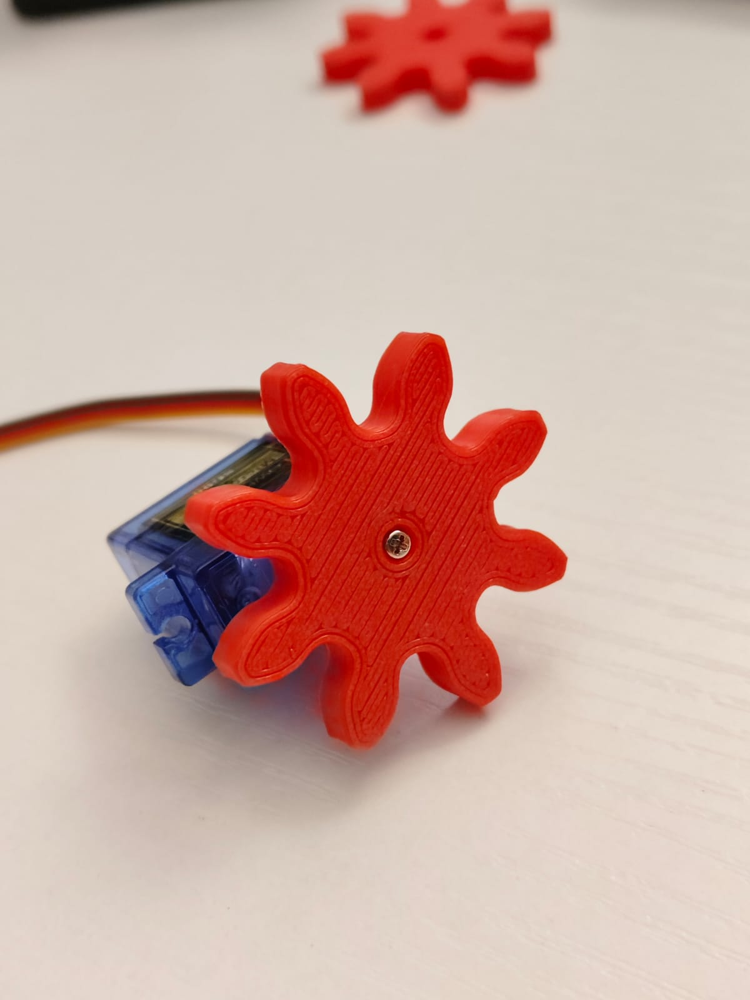

Feel My Paranoia
Una estructura con ojos que “mira” fijamente cuando detecta la presencia de alguien. En su estado normal, la base se mueve de un lado a otro hasta que detecta a un objetivo, en ese momento se detiene para mirarlo fijamente. Está hecho con Arduino R4 Minima. La estructura está hecha con impresión 3D.


